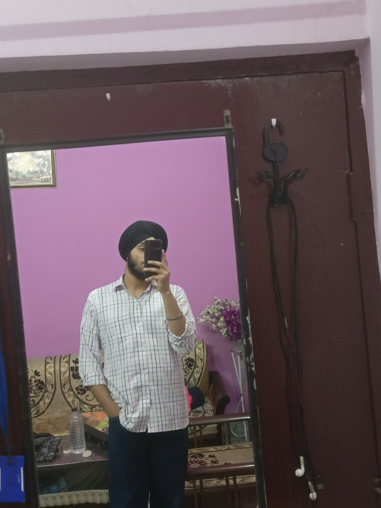

Portfolio
Personal Information
Name:
Jaspreet Singh
Email:
jassie272@gmail.com
Phone:
+91-7217320285

Skills
WEB Development
(HTML, CSS, JavaScript)
Programming Languages
(Python, Java, C++)
Database Management
(SQL, MongoDB)
UI/UX Design
Project Management
Education Background
Master of Computer Applications (MCA)
Tilak Raj Chadha Institute of Management and Technology, 2023-2025
Aggrigate% = TBD
Bachelor of Computer Applications (BCA)
Tilak Raj Chadha Institute of Management & Technology, 2020-2023
Securing 65% Marks
Senior Secondary Education (12th)
M.G. Public School
Securing 69% Marks
Secondary Education (10th)
M.G. Public School
Securing 75% Marks
Hobbies and Interests
I have a variety of interests outside of my academic pursuits. Some of my hobbies include:
Learning about Japanese Culture & Language
Playing video games
Cinematic Photography & Videography
Learning new programming languages